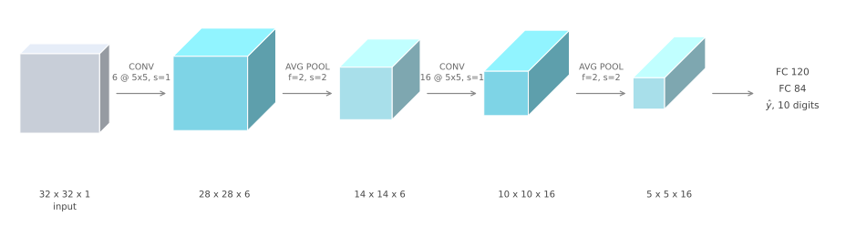
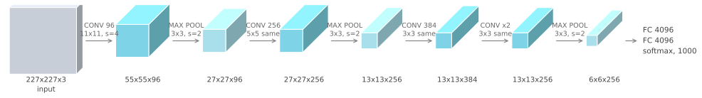
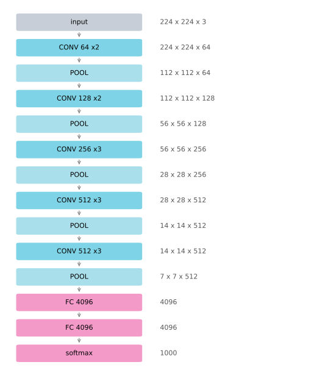

Classic Networks
deep-learning
convolutional-neural-networks
computer-vision
architecture
lenet
alexnet
vgg
LeNet-5, AlexNet, and VGG-16, the three architectures that established the patterns every later convolutional network is built on.
You have now seen the basic building blocks of a convolutional network, namely convolutional layers, pooling layers, and fully connected layers. Much of the computer vision research of the past several years has been about how to put those blocks together into effective networks, and one of the best ways to build intuition is to look at examples of what has already worked.
The reasoning is the same as with code. Many people learn to write programs by reading other people’s programs, and a good way to gain intuition about convolutional networks is to read other people’s networks. It also pays off directly, because an architecture that works well on one computer vision task often works well on another. If someone has worked out a network that is very good at recognizing cats, dogs, and people, and you are building something quite different such as a self-driving car, you may well be able to take their architecture and apply it to your problem.
This page covers three classic networks, LeNet-5, AlexNet, and VGG-16. The pages that follow cover residual networks, which made it possible to train networks over a hundred layers deep, and the Inception network. Many of these ideas cross-fertilize into other fields, so they are worth knowing even if you do not end up building computer vision systems.
LeNet-5
LeNet-5 goes back to 1998 and was built to recognize handwritten digits. It was introduced by LeCun, Bottou, Bengio, and Haffner (1998). It was trained on grayscale images, which is why the input is 32 by 32 by 1 rather than by 3.
Walking through it, the first step applies six 5 by 5 filters with a stride of one and no padding. Six filters give six channels, and the output dimension rule takes 32 down to \(32 - 5 + 1 = 28\), so the volume is 28 by 28 by 6.
Then LeNet applies pooling. When the paper was written people used average pooling far more than max pooling, so this is average pooling with \(f = 2\) and a stride of 2, which halves the height and the width to 14 by 14 by 6. A modern version of this network would almost certainly use max pooling instead.
Next comes another convolutional layer, this time with sixteen 5 by 5 filters, giving sixteen channels. Padding was not really used in 1998, and convolutions were always valid convolutions, which is why the height and width shrink every time a convolutional layer is applied. So 14 goes down to \(14 - 5 + 1 = 10\). Another pooling layer halves that to 5 by 5 by 16.
Multiplying those out, \(5 \times 5 \times 16 = 400\). Those 400 numbers feed a fully connected layer of 120 neurons, then another fully connected layer of 84, and finally a single output predicting \(\hat{y}\), which takes one of ten values for the digits 0 through 9. A modern version would use a softmax layer with a ten way classification output, whereas LeNet-5 used a different classifier at the output that is not used today.
Size and Shape Patterns
By modern standards this network was tiny, with about 60,000 parameters. Today it is common to see networks with anywhere from 10 million to 100 million parameters, so it is not unusual for a modern network to be a thousand times bigger. The cell below counts LeNet-5 exactly, using the parameter rule that a convolutional layer holds \(f \times f \times n_{C_{prev}}\) weights per filter plus one bias.
CONV 6 @ 5x5x1 156
CONV 16 @ 5x5x6 2,416
FC 400 -> 120 48,120
FC 120 -> 84 10,164
FC 84 -> 10 850
total 61,706Two patterns in this network are still repeated today.
The first is what happens to the shape of the volume as you go from left to right. The height and width tend to go down, from 32 to 28 to 14 to 10 to 5, while the number of channels goes up, from 1 to 6 to 16. Every later architecture on this page does the same thing.
The second is the arrangement of the layer types. One or more convolutional layers followed by a pooling layer, then one or more convolutional layers followed by a pooling layer, then some fully connected layers, then the output. That ordering is very common.
Reading the Original Paper
The rest of this section is a historical footnote, useful only if you want to read the original paper, and safe to skip.
Back then people used sigmoid and tanh non-linearities rather than ReLU, so those are what the paper refers to. Computers were also much slower, so to save computation and parameters the original LeNet-5 used a complicated scheme in which different filters looked at different channels of the input block, rather than every filter looking at every channel the way convolutions over volume describes. A modern implementation would not have that complexity. The original also applied a non-linearity after pooling, which is not done now.
If you do read it, this is one of the harder classic papers. Section two describes the architecture and is the part worth focusing on. Section three has experiments and results and is worth a quick look. Later sections discuss the graph transformer network, which is not widely used today. The full citation is in the references at the end of this page.
Review Questions
1. Why is the LeNet-5 input 32 by 32 by 1 rather than 32 by 32 by 3?
TipAnswer
It was trained on grayscale images of handwritten digits. A grayscale image has one intensity value per pixel, so one channel. The third dimension is the channel count, and it is 3 only for color images with separate red, green, and blue channels.
1. Why does the height and width shrink at every convolutional layer in LeNet-5?
TipAnswer
Padding was not in common use in 1998, so every convolution is a valid convolution with \(p = 0\). The output side is then \(n - f + 1\), which is smaller than \(n\) whenever \(f > 1\). With \(f = 5\) each convolutional layer costs four pixels of height and width, taking 32 to 28 and 14 to 10.
1. The two fully connected layers hold far more parameters than the two convolutional layers. Why?
TipAnswer
A convolutional layer’s parameter count depends only on the filter size and the channel counts, not on the size of the image, so the first layer needs just \(5 \times 5 \times 1 \times 6 + 6 = 156\) weights. A fully connected layer needs one weight per input per output, and the first one connects 400 inputs to 120 units, which is \(400 \times 120 + 120 = 48{,}120\) on its own. That is the parameter sharing argument from why convolutions, visible in a real network.
AlexNet
AlexNet is named after Alex Krizhevsky, the first author of the paper, written with Ilya Sutskever and Geoffrey Hinton, and published as Krizhevsky, Sutskever, and Hinton (2012). The input is 227 by 227 by 3. The paper says 224 by 224 by 3, but the numbers only work out if the input is actually 227.

The first layer applies ninety-six 11 by 11 filters with a stride of 4. Because the stride is large the dimensions shrink quickly, to \(\lfloor (227 - 11)/4 \rfloor + 1 = 55\), roughly a factor of 4. Then max pooling with \(f = 3\) and a stride of 2 brings it to \(\lfloor (55-3)/2 \rfloor + 1 = 27\), so 27 by 27 by 96.
A 5 by 5 same convolution follows, which preserves the height and width and takes the depth to 256. Max pooling again reduces the height and width to \(\lfloor (27-3)/2 \rfloor + 1 = 13\). Then three same convolutions in a row, giving 13 by 13 by 384, then 13 by 13 by 384 again, then 13 by 13 by 256. A final max pool brings it down to 6 by 6 by 256.
Multiplying out, \(6 \times 6 \times 256 = 9216\), and those 9216 numbers are unrolled and fed to a few fully connected layers, ending in a softmax over 1000 classes.
This network has a lot of similarities to LeNet-5, but it is much bigger. LeNet-5 had about 60,000 parameters, while AlexNet has about 60 million.
CONV 96 @ 11x11x3 34,944
CONV 256 @ 5x5x96 614,656
CONV 384 @ 3x3x256 885,120
CONV 384 @ 3x3x384 1,327,488
CONV 256 @ 3x3x384 884,992
FC 9216 -> 4096 37,752,832
FC 4096 -> 4096 16,781,312
FC 4096 -> 1000 4,097,000
total 62,378,344Taking pretty similar basic building blocks, giving them many more hidden units, and training on far more data, namely the ImageNet dataset, is what produced the remarkable performance. Another aspect that made it much better than LeNet was using the ReLU activation function.
Notice again where the parameters sit. The five convolutional layers together hold under 4 million, while the three fully connected layers hold over 58 million, more than 90 percent of the network. The first fully connected layer alone accounts for more than half.
Two more details matter only if you read the paper. When it was written GPUs were slower, so the network had a complicated scheme for training across two GPUs, with layers split between them and a deliberate design for when the two would communicate. The paper also used a layer called Local Response Normalization, which looks at one height and width position, takes all 256 numbers down the channel axis, and normalizes them. The motivation was that you might not want too many neurons at a given position to have very high activation. Later researchers found it does not help much, and it is not really used today.
If you are interested in the history of deep learning, this is the paper that convinced much of the computer vision community to take deep learning seriously. It is also one of the easier ones to read, so it is a good place to start.
Review Questions
1. Why does the first AlexNet layer shrink the image so aggressively, from 227 to 55?
TipAnswer
It uses a stride of 4. The output side is \(\lfloor (227 - 11)/4 \rfloor + 1 = 55\), so the stride divides the dimensions by roughly 4 in a single layer. A large stride is the cheap way to cut the spatial size of a large input before the expensive layers run.
1. AlexNet has about a thousand times more parameters than LeNet-5 but a similar arrangement of layers. Where did the extra parameters go?
TipAnswer
Almost all of them are in the fully connected layers, which hold over 58 million of the roughly 62 million total. The convolutional layers grew too, from 2,572 to about 3.7 million, but the dominant jump is the first fully connected layer, which connects 9216 inputs to 4096 units for over 37 million parameters by itself.
VGG-16
AlexNet has a relatively complicated architecture with a lot of hyperparameters to choose. VGG-16 takes a different view. Rather than having so many hyperparameters, it uses a much simpler scheme where every convolutional layer is 3 by 3 filters with a stride of 1 and same padding, and every max pooling layer is 2 by 2 with a stride of 2.
Because VGG-16 is deep, drawing all the volumes gets cluttered, so the architecture is easier to read as text.

The first two layers are convolutions with 64 filters. Because they are same convolutions the output stays 224 by 224, now with 64 channels, so CONV 64 x2 means two convolutional layers each with 64 filters. The filters are always 3 by 3 with a stride of 1, and always same convolutions, so the only thing that changes down the network is the number of filters.
The pooling layers then halve the height and width each time, taking 224 down through 112, 56, 28, 14, to 7. The final 7 by 7 by 512 volume feeds a fully connected layer with 4096 units, then another, then a softmax over 1000 classes.
The 16 in VGG-16 refers to the number of layers that have weights, namely 13 convolutional layers and 3 fully connected ones.
13 CONV layers 14,714,688
FC 25088 -> 4096 102,764,544
FC 4096 -> 4096 16,781,312
FC 4096 -> 1000 4,097,000
total 138,357,544
weighted layers: 13 conv + 3 fully connected = 16That is a large network even by modern standards, with about 138 million parameters, and its size was the main downside. But its simplicity made it appealing. The architecture is very uniform, a few convolutional layers followed by a pooling layer that halves the height and width, repeated.
The number of filters follows an equally simple rule. It starts at 64, doubles to 128, doubles to 256, doubles to 512, and then the authors judged 512 to be big enough and stopped doubling. So the height and width go down by a factor of two at each pooling layer while the channels go up by a factor of two at each new stack of convolutional layers. Making both rates that systematic is what made the paper attractive.
The architecture is due to Simonyan and Zisserman (2014). You sometimes see VGG-19, an even bigger version. Because VGG-16 does almost as well, most people use VGG-16.
Those are the three classic architectures. If you want to read the papers, the recommended order is AlexNet first, then VGG, and then LeNet, which is harder to read but a good classic once you get to it. The next page goes beyond these to more advanced and more powerful architectures.
Review Questions
1. What does the 16 in VGG-16 count?
TipAnswer
Layers that have weights. There are 13 convolutional layers and 3 fully connected layers, giving 16. Pooling layers are not counted, because they have hyperparameters but no learned parameters at all.
1. VGG-16 fixes every convolution at 3 by 3, stride 1, same padding, and every pooling layer at 2 by 2, stride 2. What does that buy, and what does it cost?
TipAnswer
It buys simplicity. AlexNet required a separate choice of filter size, stride, and padding at nearly every layer, whereas VGG has essentially one architectural decision left, namely how many filters to use in each stack. Because same convolutions preserve the height and width, only the pooling layers change the spatial size, which makes the whole network easy to reason about.
The cost is size. VGG-16 has about 138 million parameters, more than twice AlexNet, and the great majority sit in the first fully connected layer, which connects \(7 \times 7 \times 512 = 25{,}088\) inputs to 4096 units.
1. All three networks reduce the height and width while increasing the number of channels. Why is that a sensible thing to do?
TipAnswer
Early layers detect simple, local patterns such as edges, and there are relatively few distinct ones, so a small number of channels suffices at full spatial resolution. Deeper layers detect more complex and more numerous patterns, such as parts of objects, and each of those is a larger region of the original image, so less spatial resolution is needed to locate it. Trading height and width for channels keeps the volume size roughly manageable while the representation becomes richer.
1. In all three networks, most of the parameters sit in the fully connected layers rather than the convolutional ones. What causes that?
TipAnswer
Parameter sharing. A convolutional layer reuses the same \(f \times f \times n_{C_{prev}}\) filter at every position, so its parameter count is independent of the image size. A fully connected layer needs one weight for every input and output pair, so flattening a large volume immediately produces a very large matrix. In VGG-16 the 13 convolutional layers hold about 14.7 million parameters between them, while the first fully connected layer alone holds over 102 million.
References
- Krizhevsky, A., Sutskever, I., & Hinton, G. E. (2012). ImageNet classification with deep convolutional neural networks. In F. Pereira, C. J. Burges, L. Bottou, & K. Weinberger (Eds.), Advances in Neural Information Processing Systems (Vol. 25). Curran Associates. PDF
- LeCun, Y., Bottou, L., Bengio, Y., & Haffner, P. (1998). Gradient-based learning applied to document recognition. Proceedings of the IEEE, 86(11), 2278-2324. https://doi.org/10.1109/5.726791
- Simonyan, K., & Zisserman, A. (2014). Very deep convolutional networks for large-scale image recognition. arXiv. https://doi.org/10.48550/arXiv.1409.1556